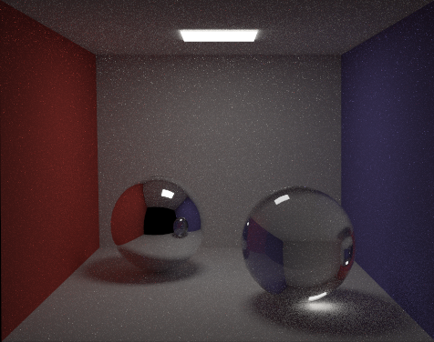
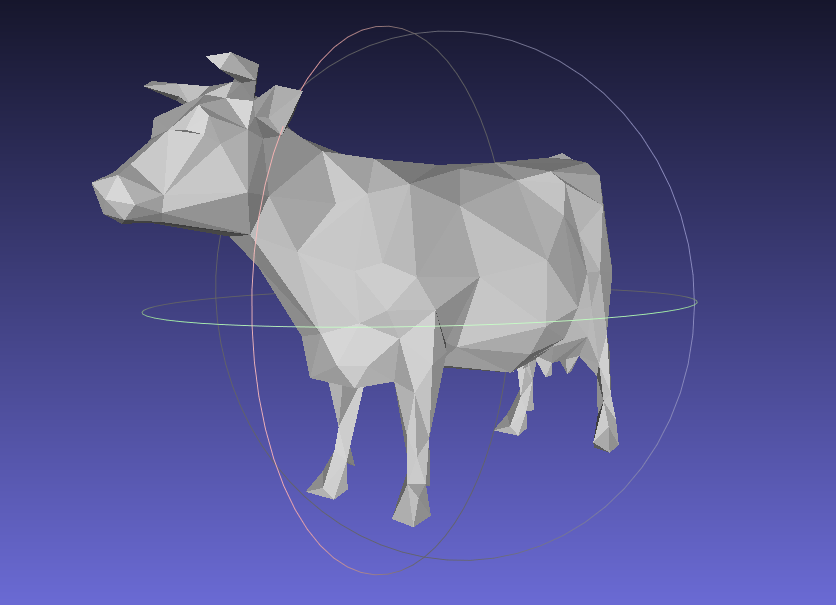
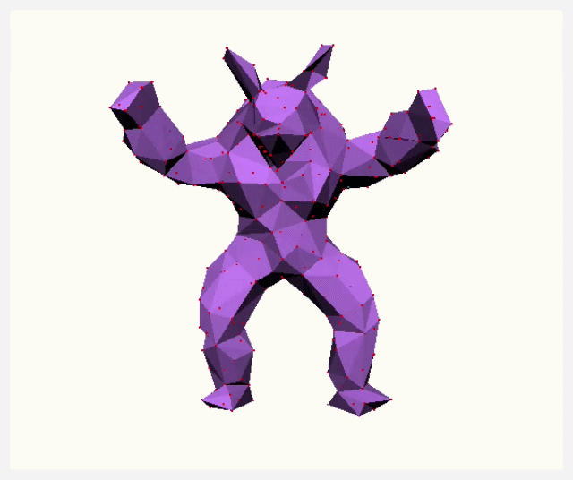
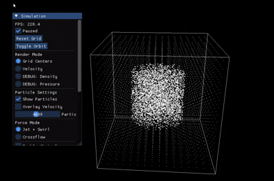

Path Tracing
Monte Carlo light transport and physically based rendering.
Blog / Studies / Graphics
Studies in rendering, geometry, deformation, and simulation.
01 / Graphics notebook
Small studies in rendering, geometry, deformation, and simulation. Explore the visuals and their references.

Monte Carlo light transport and physically based rendering.

Mesh editing, subdivision, and geometric algorithms. Paper ↗

Interactive mesh deformation using as-rigid-as-possible energy.

Stable Fluids-style incompressible gas simulation on an Eulerian grid.